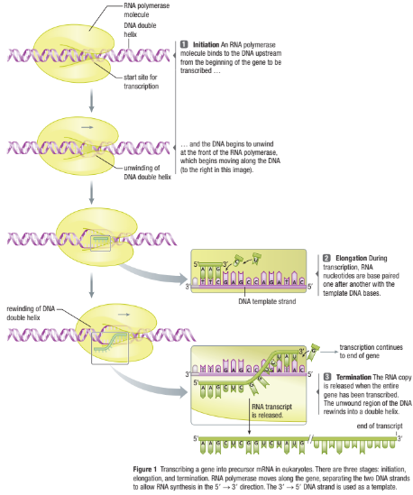
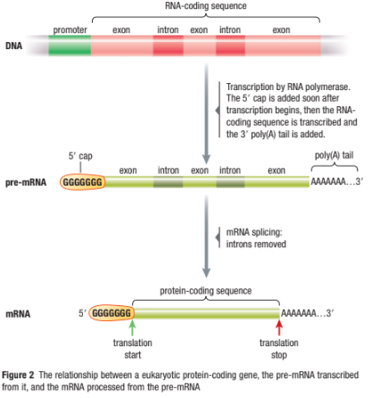

Transcription and Translation Part 1
Callout
During transcription, the DNA code is chemically rewritten as an RNA code. This occurs within the nucleus. Transcription is divided into three sequential processes: initiation, elongation, and termination.
Initiation
In both prokaryotes and eukaryotes, the process of transcription begins when the enzyme RNA polymerase binds to the DNA and unwinds it near the beginning of a gene (Figure 1, Step 1). The binding occurs at a promoter: a specialized sequence on one strand of DNA, located just upstream from the start of the gene. A key element of the promoter in eukaryotes is the TATA box: a section of DNA with a high percentage of thymine and adenine bases, which is recognized by RNA polymerase. Prokaryotes have a TATAAT sequence instead of a TATA box for this purpose. Adenine and thymine shares only two hydrogen bonds, whereas guanine and cytosine share three hydrogen bonds. Since less energy is needed to break two bonds, the RNA polymerase expends less energy opening up the DNA helix if it possesses a high concentration of adenine and thymine base pairs. The part of the gene that is to be transcribed into RNA is called the transcription unit. Elongation Once the RNA polymerase binds to the promoter and opens the DNA double helix, it starts to build the single-stranded RNA molecule. RNA polymerase, unlike DNA polymerase, can begin making the complimentary copy without needing a primer to be already in place. RNA is made in the 59→39 direction, using the 39→59 DNA strand as a template strand. The opposite strand of DNA—the strand that is not being copied—is known as the coding strand, since it contains the same base-pair sequence as the new RNA molecule, except for the absence of uracil and the presence of thy mine.
Callout
Remember that the template strand contains the sequence that is complementary to the sequence that is going to be transcribed. Therefore, the beginning of the RNA strand is the 59 end, and the other end is the 39 end. As RNA polymerase moves along the DNA, it unwinds the DNA at the forward end of the enzyme. The new RNA molecule elongates as nucleotides are added, one by one (Figure 1, Step 2). The new RNA molecule winds temporarily with the template strand of the DNA into a hybrid RNA–DNA double helix. Beyond this short region of pairing, the growing RNA strand unwinds from the DNA and extends from the RNA polymerase as a single nucleotide chain. As the RNA polymerase passes, the DNA double helix reforms. Once an RNA polymerase molecule has started transcription and progressed past
the beginning of a gene, another molecule of RNA polymerase may start producing another RNA molecule if there is room at the promoter. Most genes undergoing transcription have many RNA polymerase molecules spaced closely along them, and each molecule makes an RNA transcript. When cells require a particular protein, they usually need to produce thousands or even millions of copies. For example, a single red blood cell contains 375 million hemoglobin molecules. The process of making hemoglobin would be very slow if the gene had only one RNA polymerase enzyme making one mRNA molecule at a time. Many copies of mRNA are made so that many ribosomes can mass-produce the protein required.
Callout
Termination
The transcription of a protein-coding gene is terminated when RNA polymerase recognizes a termination sequence (Figure 1, Step 3). In prokaryotes, one termination mechanism involves a protein binding to the mRNA and stopping transcription. Another termination mechanism involves the mRNA binding with itself in a hairpin loop and stopping transcription. In eukaryotes, one termination sequence is a string of adenines, which are transcribed as a string of uracil's on the RNA. Nuclear proteins bind to the Poly uracil site and stop transcription. The newly synthesized RNA then dissociates from the DNA template strand. Transcription ceases, and the RNA polymerase is free to bind to another promoter region and transcribe another gene.

Post-transcriptional Modifications
At this point, the newly transcribed eukaryotic RNA, known as the primary transcript or precursor mRNA (or pre-mRNA), is vulnerable to the enzymes and conditions outside the cell nucleus. The pre-mRNA must undergo additional modifications
before it can exit the nucleus and reach the ribosome.
One modification is the addition of a chain of 50 to 250 adenine nucleotides, one nucleotide at a time, to the 39 end by an enzyme called poly-A polymerase (Figure 2).
The chain of adenine nucleotides called the poly(A) tail, enables mRNA to be translated efficiently and protects it from attack by RNA-digesting enzymes in the cytosol.

Callout
Modifications are also made at the beginning of the pre-mRNA transcript, where a 59 cap, consisting of seven Gs, is added by a different enzyme complex. The 59 cap functions as the initial attachment site for mRNAs to ribosomes, to allow for translation. This whole process is known as capping and tailing.
The precursor mRNA is still not ready to exit the nucleus. Further modifications need to be made. The DNA of a eukaryotic gene is composed of coding regions known as exons and non-coding regions known as introns. The introns are interspersed among the exons and are transcribed into pre-mRNAs (Figure 2). However, the introns do not code
for part of the protein. If they were left in the mRNA, they would alter the sequence of the amino acids that are used to build the protein. This would result in additional amino acids and a protein that would not fold as it should and therefore would not function correctly. Therefore, the introns are deleted, and the exons are retained in fully processed mRNA. The majority of known eukaryotic genes contain at least one intron, and some contain more than 60. Prokaryote DNA does not contain any introns.
In the nucleus, a process called mRNA splicing removes the introns from prem-RNAs and joins the exons together. mRNA splicing occurs in a spliceosome: a complex formed between the pre-mRNA and a handful of small ribonucleoproteins called snRNPs (pronounced snurps). The snRNPs bind in a particular order to an intron in the pre-mRNA (Figure 3). The first snRNPs are those that recognize and form complementary base pairs with mRNA sequences at the junctions of the intron and adjacent exons. Other snRNPs are then recruited, causing the intron to loop out and bring the two exon ends close together.
Callout
At this point, an active spliceosome has been formed, releasing the intron and joining together the two exons. The cutting and splicing are so exact that not a single base of an intron is retained in the finished mRNA, and not a single base is removed from the exons.
Exons may be joined in different combinations to produce different mRNAs from a single DNA gene sequence. A mechanism called alternative splicing greatly increases the number and variety of proteins encoded by a single gene. According to current estimates, three-quarters of all human pre-mRNAs are subjected to alternative splicing.
In each case, the different mRNAs that are produced from the parent pre-mRNA are translated to produce a family of related proteins with various combinations of aminoacidic sequences derived from the exons. Each protein in the family, then, varies its function. Alternative splicing helps us understand why humans with only about;20,000 genes can produce approximately 100,000 proteins. After the final mRNA has; been produced, it is ready to leave the nucleus and be translated by a ribosome.
Prokaryotes vs Eukaryotes Transcription
16.png)
Translation process
Callout
In the translation process, the genetic information carried by the mRNA is red in the presence of tRNA into amino acids that are assembled by ribosomes one at a time into polypeptide chains that give birth to functional proteins. Multiple factors are needed in the translation process:
-
Transfer RNA molecules (tRNAs) are small RNAs, about 70 to 90 nucleotides long.
-
All tRNAs have regions that base pair with themselves, winding into four double-helical segments to form a cloverleaf pattern.
-
At the tip of one of the double-helical segments is an anticodon: a 3-nucleotide segment that pairs with a codon in an mRNA.
-
At the other end of the cloverleaf is a region that carries the amino acid that corresponds to the anticodon.
-
Can you name the property of the pairing bases that we are explaining in this slide?
-
The particular pairing properties of the bases in the anticodons; is that the pairing of the anticodon with the first two nucleotides of the codon is always precise, but most anticodons have flexibility in pairing with the third nucleotide of the codon.
-
Each anticodon that has the same first two nucleotides code for the same amino acids no matter what the third one is. Therefore there’s 20 tARN that carries each one of the 20 existing amino acids.
12.png)
Stacked Panels: start copy
Ribosomes
-
Ribosomes carry out protein synthesis by translating mRNA into chains of amino acids in ordered sequences to make polypeptide chains that transformed later into proteins.
-
A ribosome is made up of a large and a small subunit; Each subunit is made up of a combination of ribosomal
RNA (rRNA) and ribosomal proteins.
-
The ribosome has special binding sites that actively bring together mRNA with aminoacyl–tRNAs.
A (aminoacyl) site is where the incoming aminoacyl–tRNA, carrying the next amino acid to be added to the polypeptide chain, binds to the mRNA.
P (peptidyl) site is where the tRNA, carrying the growing polypeptide chain, is bound.
E (exit) site is where an exciting tRNA leaves the ribosome.
10.png)
Initiating Translation
The first stage in assembling a protein, using mRNA as a template, is called initiation.
Translation is initiated when the large and small ribosomal subunits associate with an mRNA molecule, and the rest aminoacyl–tRNA of the new protein chain becomes bound
to the AUG start codon. e aminoacyl–tRNA that is used for initiation is a specialized initiator tRNA, which has an anticodon to the methionine-specifying AUG start codon.
In Step 1 of the initiation process, the initiator methionine–tRNA (met–tRNA) forms a complex with the small ribosomal subunit (Figure 4). e complex binds to the mRNA at the 59 cap and then moves along the mRNA (a process called scanning) until it reaches the rst AUG codon (Step 2). This is the start codon, and it is recognized by the anticodon of the Met–tRNA. e large ribosomal subunit then binds to complete the ribosome (Step 3). At the end of initiation, the initiator Met–tRNA is in the P site.
8.png)
After the initiator tRNA pairs with the AUG initiator codon, the subsequent stages of translation simply read the nucleotide bases, three at a time, on the mRNA. Since each codon consists of three bases, a sequence could potentially be read in three different ways, depending on where the ribosome begins. A correct initiator tRNA–AUG pairing establishes the correct reading frame: the series of codons for the polypeptide that is encoded by the mRNA.
7.png)
4.png)
3.png)
Elongating the Polypeptide Chain central reactions of translation take place in the four steps of the elongation stage, which adds single amino acids sequentially to a growing polypeptide chain. Figure 5 (next page) shows how the A, P, and E sites operate through the elongation stage.
Elongation begins when an initiator tRNA, with its attached methionine, is bound to the P site in Step 1. e A site is empty.
Callout
In Step 2, the second tRNA, with an appropriate anticodon and amino acid (AA2), binds to the codon in the A site of the ribosome. A GTP rather than an ATP is hydrolyzed to provide free energy for this step. Next, the amino acid (Met) is cleaved from the tRNA in the P site and forms a peptide bond with the amino acid (AA2) on the tRNA in the A site. This bond formation is catalyzed by peptidyl transferase, which is a ribosomal enzyme. At the end of Step 2, the new polypeptide chain is attached to the tRNA in the A site and an empty tRNA remains at the P site. In Step 3, the ribosome moves along the mRNA to the next codon. The two tRNAs remain bound to their respective codons, so this step positions the newly formed peptidyl–tRNA in the P site and generates a vacant A site. An appropriate tRNA moves into the A site, and Steps 2 and 3 are repeated. After each repeat, the empty tRNA that was in the P site moves to the E site. In Step 4, the empty tRNA is released from the ribosome.
Termination of Protein Synthesis
Translation switches from the elongation to the termination stage when the A site of a ribosome arrives at one of the stop codons (UAA, UAG, or UGA) on the mRNA. When a stop codon appears at the A site, a protein release factor binds at this site instead of an aminoacyl–tRNA. In response, the polypeptide chain is released from the tRNA at the P site as usual. However, because no amino acid is present at the A site, the freed polypeptide chain is detached from the ribosome. At the same time, the ribosomal subunits separate and detach from the mRNA. The empty tRNA and the release factor are also released.